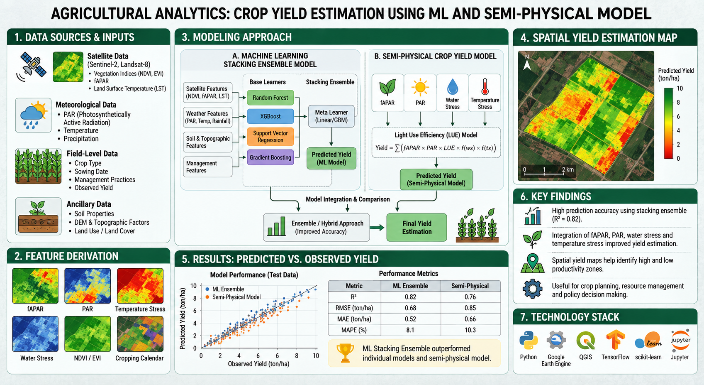
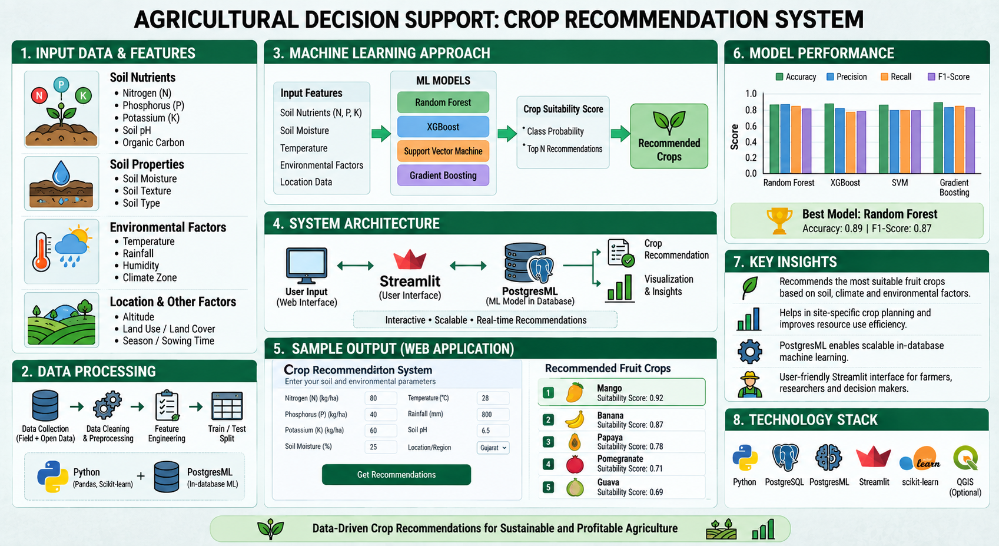
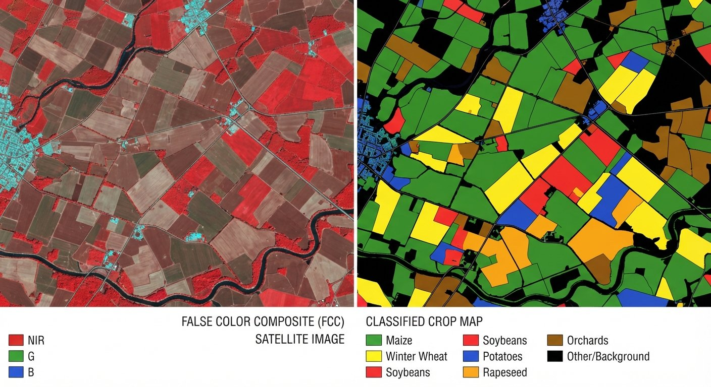
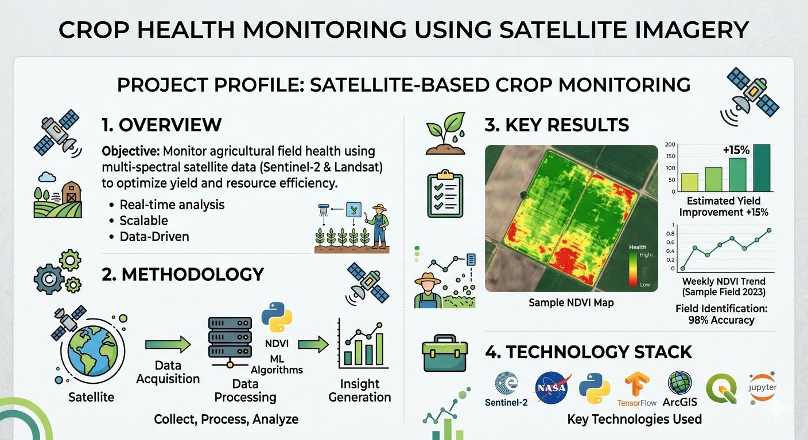
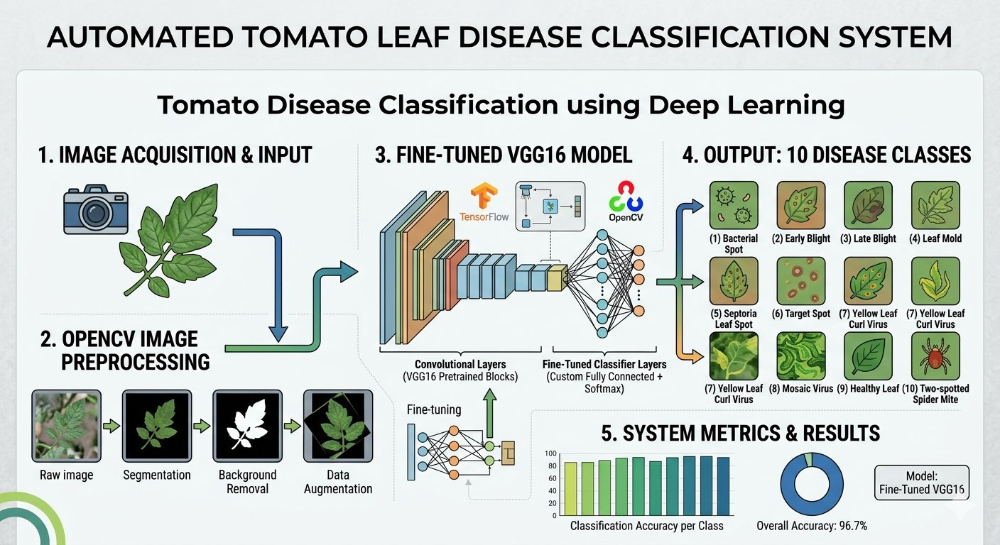
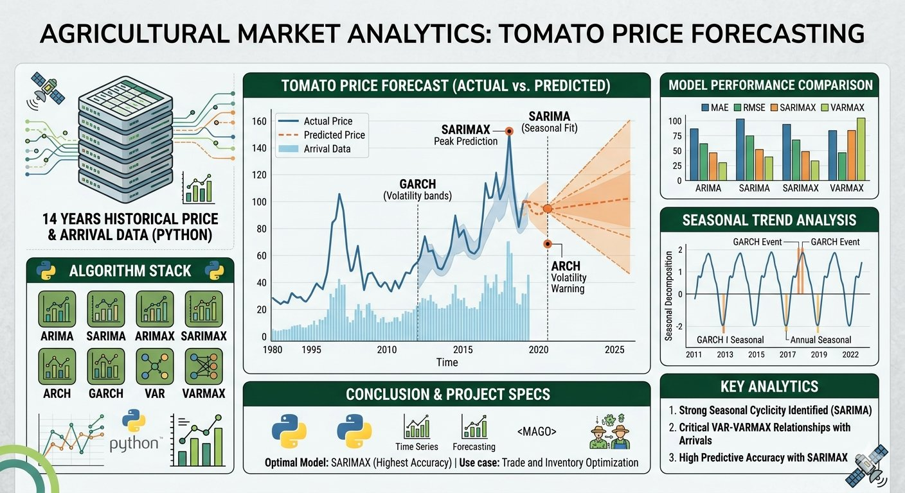

Core Agricultural Skills
Crop Production · Agronomy · Crop Physiology · Field Crop Production · Crop Health Monitoring · Crop Yield Estimation · Crop Yield Forecasting · Crop Classification
Agriculture professional with a B.Sc. (Hons.) in Agriculture and M.Sc. in Agriculture Analytics, combining agricultural knowledge with GIS, Remote Sensing, Machine Learning and data-driven approaches.
Visual language inspired by the work in the résumé: precision farming, satellite observation and location-based spatial analysis.


Agriculture professional with a B.Sc. (Hons.) in Agriculture and M.Sc. in Agriculture Analytics, combining comprehensive agricultural knowledge with data-driven approaches.
Academic training covers agronomy, crop production, crop physiology, plant breeding, genetics, plant pathology, entomology, horticulture, soil science, irrigation and water management, integrated pest management, agricultural economics, farm management, protected cultivation, sustainable agriculture, organic farming, biofertilizers, seed technology and post-harvest management.
Experienced in applying Machine Learning, statistical modelling, weather and water analytics, agricultural datasets and satellite-derived information to crop classification, crop health assessment, acreage estimation, yield forecasting, soil analysis and agricultural decision support.
Crop Production · Agronomy · Crop Physiology · Field Crop Production · Crop Health Monitoring · Crop Yield Estimation · Crop Yield Forecasting · Crop Classification
Soil Science · Soil Fertility Management · Problematic Soil Management · Soil & Water Conservation · Irrigation & Water Management · Soil Moisture Analysis · Soil Property Estimation · Weather & Water Analytics
Plant Pathology · Plant Disease Detection · Entomology · Integrated Pest Management · Insect Pest Management · Disease Management · Protected Cultivation · Seed Technology · Post-Harvest Management
Agricultural Data Analysis · Agricultural Market Analysis · Agricultural Risk Analysis · Crop & Soil Analysis · Statistical Modelling · Predictive Modelling · Time-Series Forecasting · Machine Learning · Deep Learning
Python · R · SQL · Pandas · NumPy · Matplotlib · Scikit-learn
Machine Learning · Deep Learning · TensorFlow · Keras · OpenCV · Random Forest · Ensemble Modelling
Google Earth Engine · Sentinel-1 SAR · Sentinel-2 · ERDAS Imagine · SNAP · ArcGIS · QGIS · ENVI
PostgreSQL · Power BI · Looker Studio · Advanced Excel · Rasterio · GDAL · GeoPandas · IMD · ERA5 · NASA POWER · CHIRPS
Amnex Infotech Pvt Ltd · Ahmedabad
SBI General Insurance · New Delhi
Semantic Technologies and Agritech Services Pvt Ltd · Pune, Maharashtra

01Developed a Machine Learning stacking ensemble model and a semi-physical crop yield model integrating satellite-derived fAPAR, PAR, water stress and temperature stress with field-level data.

02Built a fruit crop recommendation system using PostgresML, Streamlit and Machine Learning to recommend suitable crops from soil nutrients (N, P, K), soil moisture, temperature and environmental factors.

03Worked on satellite-based crop mapping and acreage estimation using Machine Learning, satellite imagery, Python and agricultural datasets, applying crop classification and spatial analysis to estimate cultivated area.

04Developed crop health monitoring workflows using SAR and optical satellite imagery, applying Machine Learning and DPRVI-based methodologies to assess crop condition.
Applied Machine Learning, Deep Learning, satellite data and GIS techniques for soil property and soil moisture estimation, analysing environmental variables for agricultural and land-management applications.

06Fine-tuned a pretrained VGG16 model to classify 10 tomato leaf disease classes, using OpenCV preprocessing, background removal and data augmentation.

07Forecasted tomato prices using 14 years of historical price and arrival data in Python using ARIMA, SARIMA, ARIMAX, SARIMAX, ARCH, GARCH, VAR and VARMAX models.
Project visuals 03–07 are portfolio visuals supplied for these projects; external company logo marks are loaded from web-hosted brand/favicons.
Junagadh Agricultural University · Junagadh, Gujarat
Dhirubhai Ambani Institute of Information and Communication Technology · Gandhinagar, Gujarat
Indian Institute of Remote Sensing – ISRO · Dehradun
Soil Science · Agricultural Meteorology & Climate Change · Agricultural Microbiology · Agricultural Informatics · Agronomy · Soil Fertility Management · Soil & Water Conservation · Agricultural Economics · Fruit & Plantation Crops · Plant Breeding · Plant Genetics · Crop Physiology · Vegetable & Spice Crops · Agricultural Marketing · Integrated Pest Management · Insect Pest Management · Crop Production Technology · Weed Management · Seed Technology · Protected Cultivation · Farming Systems & Sustainable Agriculture · Farm Management · Biofertilizers · Organic Farming · Post-Harvest Management
Earth Observation Systems · Analytics & Statistical Methods · Python Programming & SQL · Big Data Analytics · Machine Learning · Programming for Geodata Processing · Spatial Modelling & Data Assimilation · Agricultural Market Analysis · Crop & Soil Analysis · Risk Analysis & Modelling · Weather & Water Analytics
Centre of Excellence for Protected Cultivation and Precision Farming on Vegetables
AMR Dairy · Sponsored by BEE Board
Amnex Infotechnologies
IIRS · ISRO
Esri India
Space Application Centre · ISRO
The Pioneer Tech
Nascent Infotech
Udemy
Open to opportunities related to agriculture, geospatial analytics, GIS, Remote Sensing and data-driven decision support.